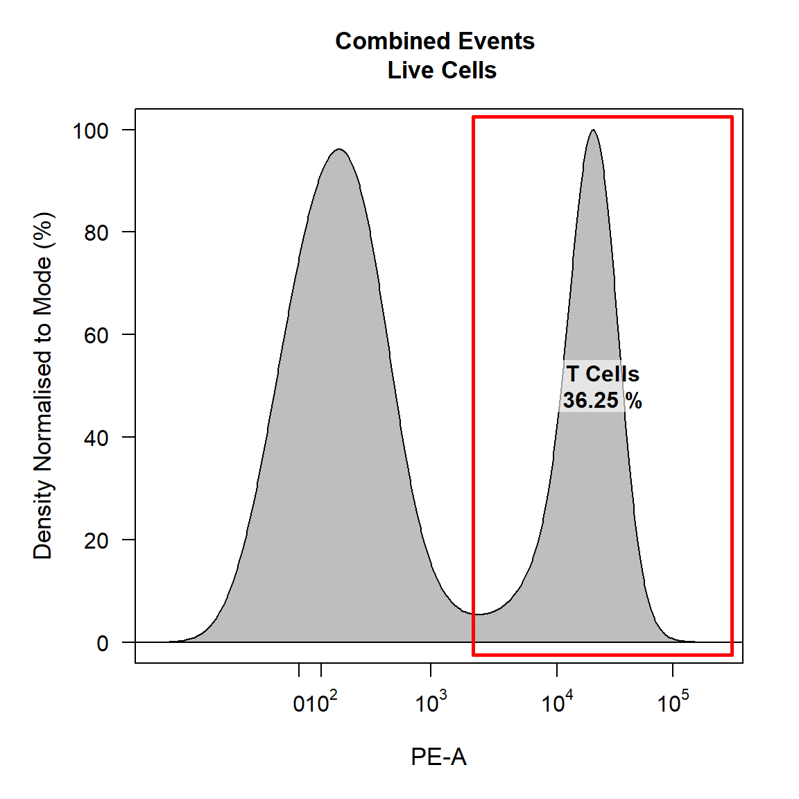
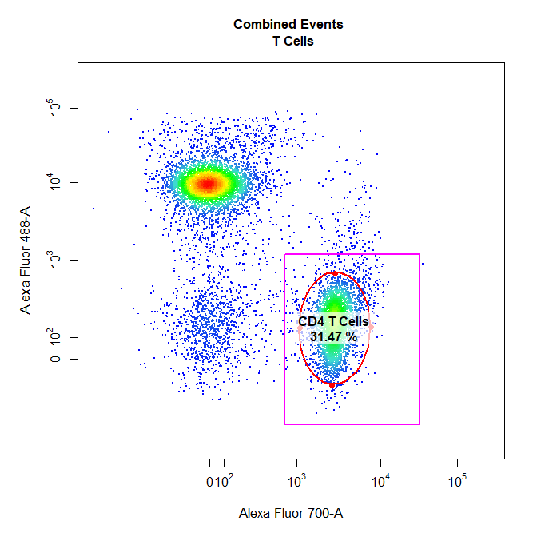
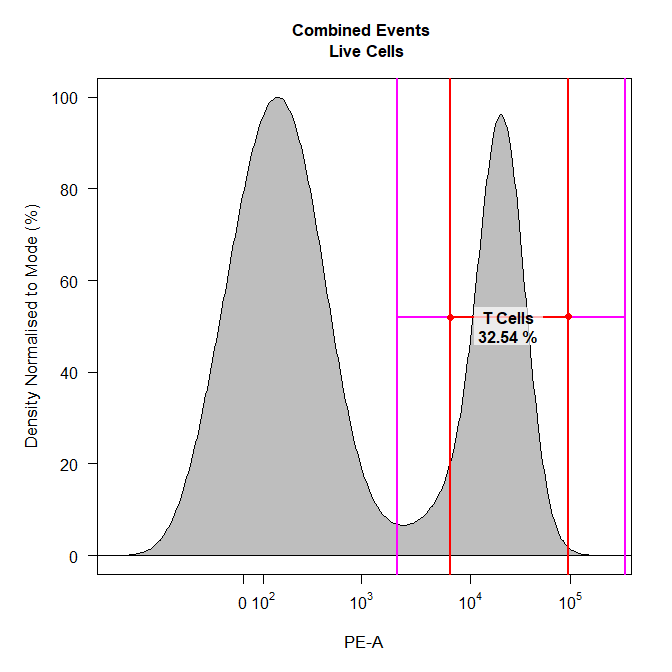

CytoRSuite: Gate Manipulation
Dillon Hammill
2019-02-18
Source:vignettes/CytoRSuite-Gate-Manipulation.Rmd
CytoRSuite-Gate-Manipulation.Rmd1. Introduction
Manipulation of gates saved to the gatingTemplate is possible through the gate_remove and gate_edit functions. As their names suggest gate_remove will remove the gate from the GatingSet and the gatingTemplate, whilst gate_edit allows the user to update an existing gate and update the GatingSet and gatingTemplate accordingly. This vignette aims to demonstrate the appropriate use of these functions for manipulating gates using CytoRSuite.
2. Gate Manipulation in CytoRSuite
To demonstrate gate_edit and gate_remove we will use the “Activation” flowSet shipped with CytoRSuiteData. For more details refer to ?Activation.
2.1 Prepare Samples for Gating
library(CytoRSuite, quietly = TRUE)
library(CytoRSuiteData, quietly = TRUE)
# Load in Activation dataset
fs <- Activation
# Add Samples to GatingSet
gs <- GatingSet(fs)
# Extract spillover matrix from flowFrame description slot - see ?computeSpillover ?editSpillover
spill <- fs[[1]]@description$SPILL
# Apply compensation to samples & save to object fs
gs <- compensate(gs, spill)
# Apply logicle transformation to all fluorescent channels
trans <- estimateLogicle(gs[[4]], colnames(spill))
gs <- transform(gs, trans)2.2 Gate Samples Using gate_draw
gate_draw(gs,
parent = "root",
alias = "Cells",
channels = c("FSC-A","SSC-A"),
type = "p",
gatingTemplate = "Manipulation gatingTemplate.csv")
gate_draw(gs,
parent = "Cells",
alias = "Single Cells",
channels = c("FSC-A","FSC-H"),
type = "p",
gatingTemplate = "Manipulation gatingTemplate.csv")
gate_draw(gs,
parent = "Single Cells",
alias = "Live Cells",
channels = c("Alexa Fluor 405-A","Alexa Fluor 430-A"),
type = "boundary",
gatingTemplate = "Manipulation gatingTemplate.csv")
gate_draw(gs,
parent = "Live Cells",
alias = "T Cells",
channels = "PE-A",
type = "interval",
gatingTemplate = "Manipulation gatingTemplate.csv")
gate_draw(gs,
parent = "T Cells",
alias = c("CD4 T Cells","CD8 T Cells"),
channels = c("Alexa Fluor 700-A","Alexa Fluor 488-A"),
type = "rectangle",
gatingTemplate = "Manipulation gatingTemplate.csv")
3. gate_edit
gate_edit provides a simple way to modify existing gates applied to the GatingSet and saved to the gatingTemplate csv file. Key features of gate_edit include:
- Re-plots the data with the existing gate(s) in pink.
- Determines which
gate_drawgate type was used to construct the gate(s). - Makes the appropriate call to CytoRSuite gating function(s) to allow the user to re-draw the gate(s) in red.
- Applies the new gate(s) to the GatingSet.
- Updates the relevant entries in the gatingTemplate.
The type argument is not necessary if the type of the new gate is to be the same as the old one. This argument allows users to change the type of the existing gate(s) if necessary. We will demonstrate its use below:
Since no type is supplied the new gate will have the same type as the existing gate:
gate_edit(gs,
parent = "root",
alias = "Cells",
gatingTemplate = "Manipulation gatingTemplate.csv")
Let’s update the Single Cells gate as well:
gate_edit(gs,
parent = "Cells",
alias = "Single Cells",
gatingTemplate = "Manipulation gatingTemplate.csv")
Changing the type argument will alter the gate type of the existing gate. for example type = “ellipse” will change the existing rectangle gate to an ellipsoid gate:
gate_edit(gs,
parent = "T Cells",
alias = "CD4 T Cells",
type = "ellipse",
gatingTemplate = "Manipulation gatingTemplate.csv")
Users can edit any gates with gate_edit including 1-D interval gates:
gate_edit(gs,
parent = "Live Cells",
alias = "T Cells",
gatingTemplate = "Manipulation gatingTemplate.csv")
Users can also pass cyto_plot arguments to gate_edit. For example we can add some 2-D contour lines to help determine where the gate should be drawn:
gate_edit(gs,
parent = "T Cells",
alias = "CD8 T Cells",
gatingTemplate = "Manipulation gatingTemplate.csv",
contour_lines = 15)
Back-gating is also fully supported in gate_edit through cyto_plot’s overlay argument. For example if we would like to see where the T Cells population falls on FSC-A and SSC-A:
gate_edit(gs,
parent = "root",
alias = "Cells",
overlay = "T Cells",
gatingTemplate = "Manipulation gatingTemplate.csv")
Visualise the new gating strategy using cyto_plot_gating_scheme (result not shown).
cyto_plot_gating_scheme(gs[[4]])
4. gate_remove
gate_remove simply removes the selected gate(s) and associated descendant populations from the GatingSet and the gatingTemplate. Removal of multiple populations in a single call is supported as long as these populations share the same parent. gate_remove features:
- Remove gate(s) from GatingSet.
- Remove gate(s) entries from the gatingTemplate.
For example to remove the T Cells gate:
gate_remove(gs,
alias = "T Cells",
gatingTemplate = "Manipulation gatingTemplate.csv")T Cells node no longer exists in the GatingSet:
getNodes(gs)## [1] "root" "/Cells"
## [3] "/Cells/Single Cells" "/Cells/Single Cells/Live Cells"T Cells node no longer exists in the gatingTemplate:
gatingTemplate("Manipulation gatingTemplate.csv")## Adding population:Cells## Adding population:Single Cells## Adding population:Live Cells## --- Gating Template: default
## with 4 populations defined5. More information
For more information on these gate manipulation functions refer to the documentation for these functions in the Reference. To learn more about how to visualise the data refer to Visualisation Using cyto_plot vignette.